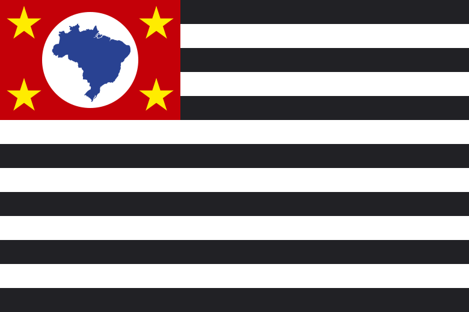

About Me
My name is Adler, I was born in São Paulo, Brazil. In my childhood I've lived in a couple of cities around our state São Paulo, and after my 8s, we settled in Batayporã, Mato Grosso Do Sul. While still there I graduated in High School as a Computer Technician, went on a mission and after returning in 2019 I started my BYU Degree through Pathway Connect Program. I'm currently living in São Paulo, where I moved by the end of 2019 to study and work. Here I met my wife, we had a kid 1 year ago, and I've been working as a Software Engineer since I moved. I participated in many projects in a few companies, most of them related to technology in finance and investment services.
São Paulo, Brazil
São Paulo is the most populous city in Brazil and the capital of the state of São Paulo. São Paulo is the most populous city in the world outside of Asia and the world's 20th-largest city proper by population. Additionally, São Paulo is the largest Portuguese-speaking city in the world. The city's name honors the Apostle, Saint Paul of Tarsus. The city's metropolitan area, the Greater São Paulo, ranks as the most populous in Brazil and the 12th-most-populous on Earth.